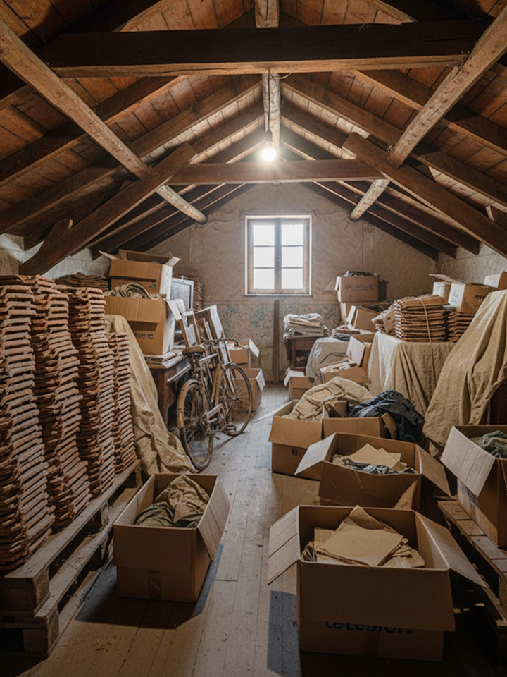
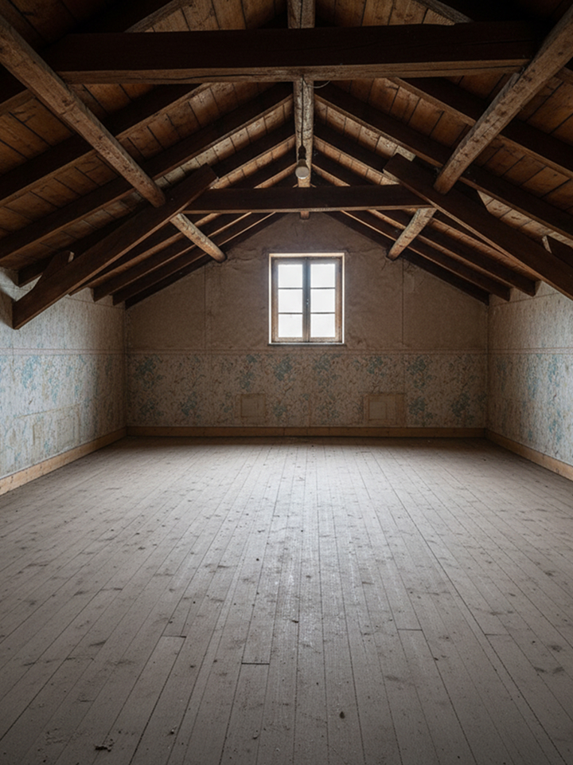
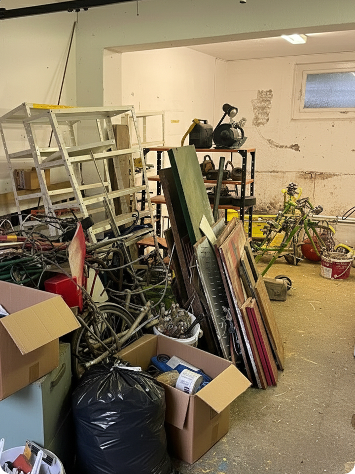
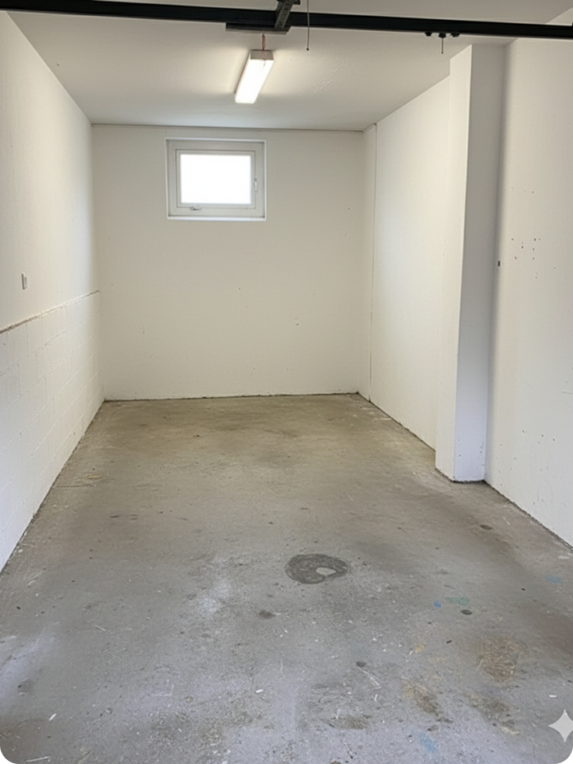
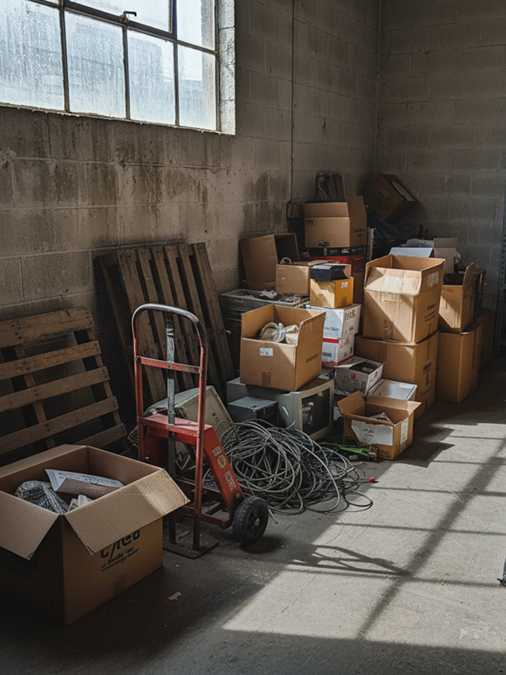
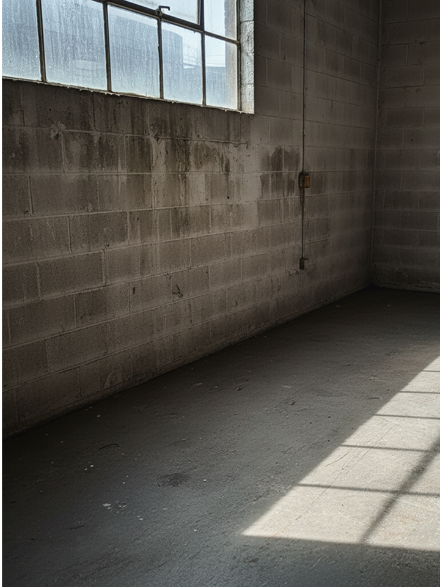

Libérez votre espace sans effort, on s’occupe de tout.
Nous vidons vos logements du sol au plafond : tri, transport et évacuation inclus.
Meubles, cartons, vélos, objets inutilisés… On trie, on recycle, et on fait de la place.
Nous intervenons rapidement pour évacuer mobilier, matériel et archives inutiles.
80 % des objets collectés sont triés, recyclés ou donnés à des associations locales.
Une équipe familiale proche de vous.
Intervention sous 24/48h dans toute la région.
Recyclage, dons et tri sélectif.
Prix clairs, sans frais cachés.
Avant notre passage
Après notre passage
Avant notre passage
Après notre passage
Avant notre passage
Après notre passage
Nettoyage fin de chantier
Une entreprise jeune et dynamique. Parfait pour le nettoyage de fin de chantier. 👍
Nettoyage de fin de bail
Nous avons eu recours à Malo Nettoyage pour le nettoyage complet de notre appartement à vendre. Super professionnels, nettoyage de très grande qualité, rapides, disponibles et fiables. Je recommande les yeux fermés !
Nettoyage régulier
Cela fait presque 3 mois que Malo Nettoyage s’occupe du ménage chez mes grands-parents, et c’est un vrai soulagement pour nous. Leur équipe est incroyable. Respectueuse, discrète, toujours souriante et prête à aider, même pour déplacer des meubles sans rien demander en retour. Mes grands-parents se sentent écoutés et respectés, et c’est vraiment précieux. Merci à toute l’équipe. Nous vous recommandons les yeux fermés !
Nettoyage de fin de bail
Nettoyage de fin de bail effectué par Malo Nettoyage. Etat des lieux passé sans problème. Prix plus que correct. Très bien, merci beaucoup.
Nettoyage vitres et sols
J’ai fais appel à l’entreprise Malo Nettoyage pour les vitres et sols de ma maison , et j’en suis 100% satisfaite . Travail rapide et efficace , ils m’ont donné entière satisfaction. Personnel chaleureux et à l’écoute.
Nettoyage fin de bail
Un immense merci! J'ai été entièrement satisfaite par vos services de nettoyage de fin de bail : Professionnalisme, efficacité, propreté et rapidité, - et ce malgré la grande charge de travail qu'il y'avait à faire - vraiment au top! Je recommande à 100% et vous recontacterais sans hésiter pour d'autres services à l'avenir. 🙏🏼
Nettoyage entreprise
Excellent suivi clientèle. Toujours le même interlocuteur. Travail professionnel, personnel motivé, objectif fixé pour chaque intervention, horaires respectés. En cas de nécessité le personnel est dévoué pour tout autre aide. Nous recommandons vivement cette entreprise qui travaille actuellement pour nous.
Nettoyage fin de bail
Au top mon appartement étais dans un sale etat tout a bien pu être rattraper merci infiniment efficace et super sympathique 👍☺️
Nettoyage vitres
On vous remercie infiniment pour votre travail et gentillesse de chacun. Respectueux et avenant, rapide. Bravo à tous !
Après le succès de Malo Nettoyage, nous avons décidé d’étendre notre savoir-faire au débarras.
👉 10 ans d’expérience sur le terrain
👉 Une équipe réactive, respectueuse et locale
C’est ainsi qu’est née Malo Débarras : une entreprise familiale basée sur la confiance, la rapidité et le respect des lieux et des personnes.
Chaque cas est unique. Le prix dépend du volume, de l’accès et du type d’objets. Devis gratuit et sans engagement.
Nous trions, recyclons et donnons aux associations ce qui peut être réutilisé. Le reste est acheminé en déchetterie.
Oui, principalement à Payerne, dans la Broye, Vaud et Fribourg, mais nous nous déplaçons sur demande.